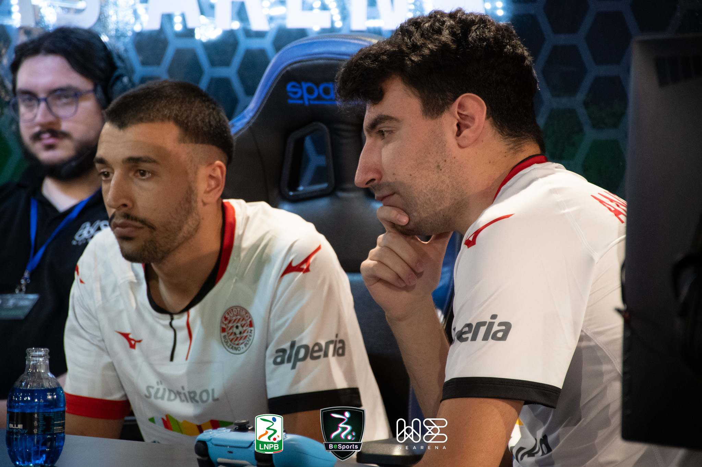
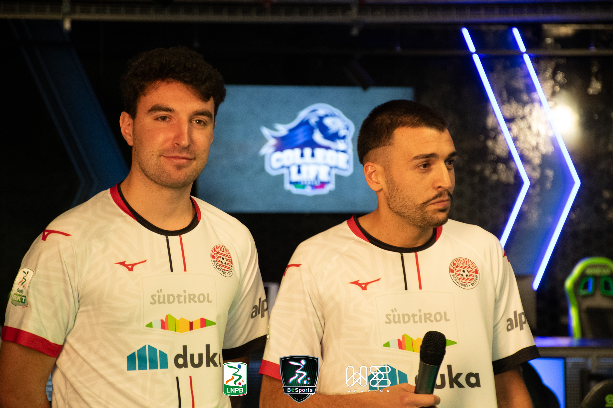
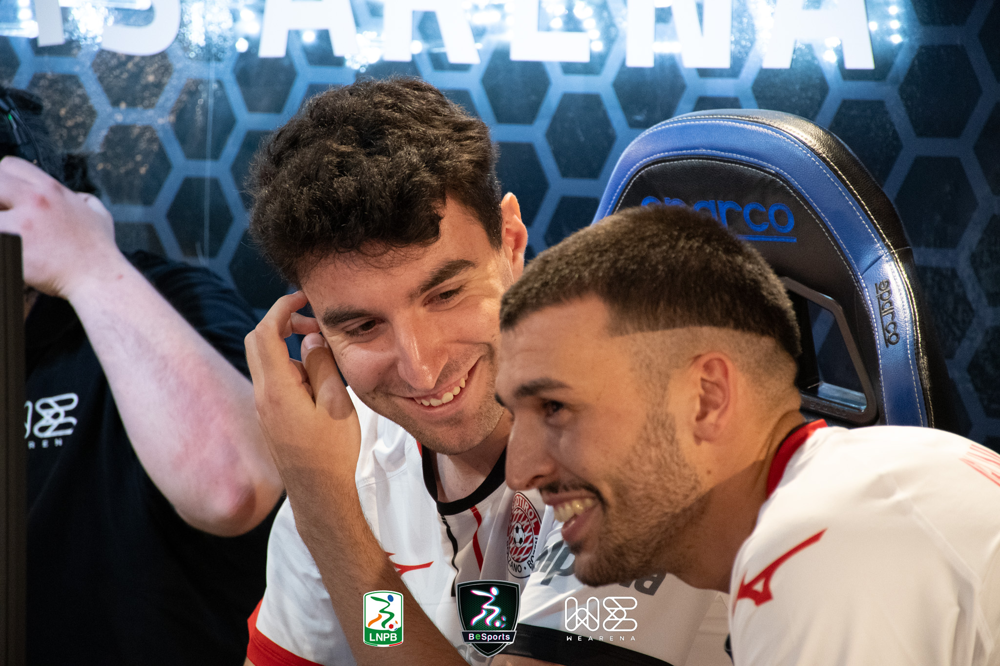

BeSports 2023.
Rappresentando l'FC Südtirol nel campionato virtuale di Serie B, BeSports, organizzato da We Arena.
Tutto è iniziato in modo del tutto inaspettato: un messaggio, una chiamata e la decisione di mettersi in gioco. Prima del torneo non avevo mai incontrato il mio compagno di squadra, eppure da questa collaborazione è nata una solida intesa che dura tutt'oggi. È stata un'avventura che mi ha arricchito profondamente sotto il profilo personale e relazionale.
Torneo affrontato spalla a spalla con Andrea Ablondi, chiudendo in posizione 3-4 al termine.


